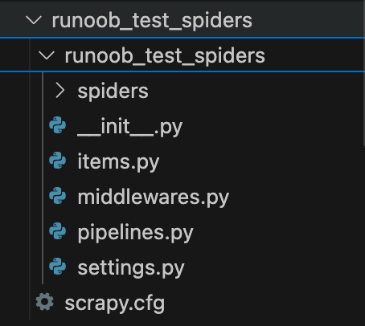
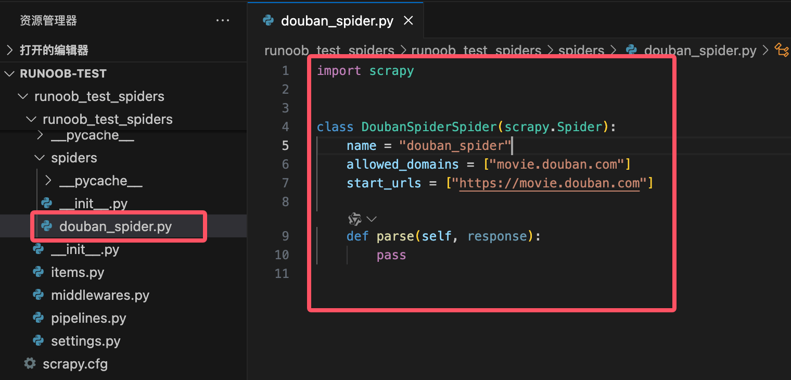
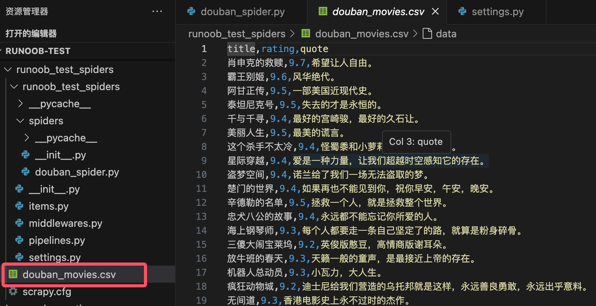

Biblioteca Python Scrapy
Scrapy es un potente framework de rastreo en Python, diseñado específicamente para extraer datos de páginas web y extraer información.
Scrapy se utiliza a menudo en aplicaciones como minería de datos, procesamiento de información o almacenamiento de datos históricos.
Scrapy incluye muchas funciones útiles, como manejar solicitudes, rastrear estados, manejar errores, gestionar límites de frecuencia de solicitudes, etc. Es muy adecuado para el rastreo web eficiente y distribuido.
En comparación con bibliotecas de rastreo simples (comorequests 和 BeautifulSoup), Scrapy es un framework de rastreo con todas las funciones, altamente extensible y flexible, adecuado para tareas de rastreo web complejas y a gran escala.
Sitio web oficial de Scrapy:https://scrapy.org/。
Características e introducción de Scrapy:https://www.runoob.com/w3cnote/scrapy-detail.html。
Diagrama de arquitectura de Scrapy (las líneas verdes son el flujo de datos):

El funcionamiento de Scrapy se basa en los siguientes componentes principales:
- Spider: Clase araña, utilizada para definir cómo extraer datos de las páginas web y cómo rastrear los enlaces de las páginas.
- Item: Se utiliza para definir y almacenar los datos extraídos. Equivale a un modelo de datos.
- Pipeline: Se utiliza para procesar los datos extraídos, comúnmente para limpiar, almacenar datos, etc.
- Middleware: Se utiliza para manejar solicitudes y respuestas, puede usarse para configurar proxies, gestionar cookies, user-agents, etc.
- Settings: Se utiliza para configurar varios ajustes del proyecto Scrapy, como el retraso de solicitudes, el número de solicitudes concurrentes, etc.
Instalar Scrapy
Antes de usar Scrapy, debes instalarlo. Usamos pip para instalarlo:
pip install scrapy
Estructura de un proyecto Scrapy
Un proyecto Scrapy es un directorio estructurado que contiene múltiples carpetas y módulos, diseñado para ayudarte a organizar el código del rastreador.
Scrapy utiliza herramientas de línea de comandos para crear y gestionar proyectos de rastreo. Puedes usar el siguiente comando para crear un nuevo proyecto Scrapy:
scrapy startproject myproject
Esto creará un proyecto llamado myproject, cuya estructura será aproximadamente la siguiente:
myproject/
scrapy.cfg # 项目的配置文件
myproject/ # 项目源代码文件夹
__init__.py
items.py # 定义抓取的数据结构
middlewares.py # 定义中间件
pipelines.py # 定义数据处理管道
settings.py # 项目的设置文件
spiders/ # 存放爬虫代码的文件夹
__init__.py
myspider.py # 自定义的爬虫代码
Escribir un simple rastreador Scrapy
El siguiente es un ejemplo básico de rastreador Scrapy que muestra cómo extraer datos de una página web.
Vamos a crear un proyecto de rastreador:
scrapy startproject runoob_test_spiders
Al ejecutar el comando anterior, si tiene éxito, se mostrará:
templates/project', created in:/Users/Runoob/runoob-test/runoob_test_spiders
You can start your first spider with:
cd runoob_test_spiders
scrapy genspider example example.com
La estructura del proyecto generado es la siguiente:

Luego entra en ese directorio:
cd runoob_test_spiders
A continuación, mediantescrapy genspiderel comando para crear un rastreador:
scrapy genspider douban_spider movie.douban.com
La estructura del directorio es la siguiente:

En el directorio runoob_test_spiders se genera un archivo llamado douban_spider.py, con el siguiente código:
Ejemplo
class DoubanSpiderSpider(scrapy.Spider):
name = "douban_spider"
allowed_domains = ["movie.douban.com"]
start_urls = ["https://movie.douban.com"]
def parse(self, response):
pass
Explicación del código:
name: Define el nombre del rastreador, debe ser único.allowed_domains: Limita los dominios que el rastreador puede visitar, evitando que rastree páginas de otros dominios.start_urls: Define las páginas iniciales del rastreador, desde las cuales el rastreador comenzará a extraer.parse：parseEl método es la parte central de cada rastreador, se utiliza para procesar la respuesta y extraer datos. Recibe unresponseobjeto, que representa el contenido de la página devuelto por el servidor.
Escribir el código del rastreador
Antes de escribir el código del rastreador, debemos tener en cuenta algunos puntos:
- Sitios como Douban pueden detectar el comportamiento del rastreador; se recomienda establecer USER_AGENT y DOWNLOAD_DELAY para simular el comportamiento de un usuario normal.
- Al rastrear datos, respeta las reglas del archivo robots.txt del sitio web objetivo y evita ejercer demasiada presión sobre el servidor.
- Si rastreas con demasiada frecuencia, podrías provocar el bloqueo de la IP.
Modificar la configuración de settings.py
Agrega la siguiente configuración en settings.py para simular solicitudes de un navegador y eludir los mecanismos anti-rastreo:
# 设置 User-Agent USER_AGENT = 'Mozilla/5.0 (Windows NT 10.0; Win64; x64) AppleWebKit/537.36 (KHTML, like Gecko) Chrome/91.0.4472.124 Safari/537.36' # 不遵守 robots.txt 规则 ROBOTSTXT_OBEY = False # 设置下载延迟，避免过快请求 DOWNLOAD_DELAY = 2 # 启用自动限速扩展 AUTOTHROTTLE_ENABLED = True AUTOTHROTTLE_START_DELAY = 2 AUTOTHROTTLE_MAX_DELAY = 5
En el código del rastreador, agrega encabezados de solicitud personalizados (como User-Agent y Referer) para simular aún más el comportamiento de un navegador.
Abre el archivo douban_spider.py y modifica su contenido de la siguiente manera:
Ejemplo
class DoubanSpider(scrapy.Spider):
name = "douban_spider"
start_urls = [
'https://movie.douban.com/top250',
]
def start_requests(self):
headers = {
'User-Agent': 'Mozilla/5.0 (Windows NT 10.0; Win64; x64) AppleWebKit/537.36 (KHTML, like Gecko) Chrome/91.0.4472.124 Safari/537.36',
'Referer': 'https://movie.douban.com/',
}
for url in self.start_urls:
yield scrapy.Request(url, headers=headers, callback=self.parse)
def parse(self, response):
for movie in response.css('div.item'):
yield {
'title': movie.css('span.title::text').get(),
'rating': movie.css('span.rating_num::text').get(),
'quote': movie.css('span.inq::text').get(),
}
# Manejo de paginación
next_page = response.css('span.next a::attr(href)').get()
if next_page is not None:
yield response.follow(next_page, callback=self.parse)
Análisis del código:
name = "douban_spider": Define el nombre del rastreador.start_urls: Define la URL inicial desde la que el rastreador comienza a rastrear (la página Top 250 de Douban Movies).parsemétodo:usa selectores CSS para extraer el título, la puntuación y la sinopsis de cada película.
span.title::text: Extrae el título de la película.span.rating_num::text: Extrae la puntuación de la película.span.inq::text: Extrae la sinopsis de la película.
Manejo de paginación:
Utiliza
span.next a::attr(href)para extraer el enlace de la siguiente página.Si existe una página siguiente, usa
response.followpara continuar rastreando.
Ejecuta el siguiente comando en la línea de comandos para iniciar el rastreador:
scrapy crawl douban_spider -o douban_movies.csv
Esto iniciará el rastreador y guardará los datos extraídos en el archivo douban_movies.csv.

Nota: El contenido anterior es solo para fines educativos. Al rastrear datos, respeta las reglas del archivo robots.txt del sitio web objetivo.
Métodos comunes
1. Métodos del rastreador
| Nombre del método | Descripción de la función | Ejemplo |
|---|---|---|
start_requests() |
Genera solicitudes iniciales; se pueden personalizar los encabezados de solicitud, los métodos de solicitud, etc. | yield scrapy.Request(url, callback=self.parse) |
parse(response) |
Procesa la respuesta y extrae datos; es el método principal del rastreador. | yield {'title': response.css('h1::text').get()} |
follow(url, callback) |
Maneja automáticamente URLs relativas y genera nuevas solicitudes, utilizado para paginación o navegación entre enlaces. | yield response.follow(next_page, callback=self.parse) |
closed(reason) |
Se llama al cerrar el rastreador, se utiliza para limpiar recursos o registrar logs. | def closed(self, reason): print('Spider closed:', reason) |
log(message) |
Registra información de log. | self.log('This is a log message') |
2. Métodos de extracción de datos
| Nombre del método | Descripción de la función | Ejemplo |
|---|---|---|
response.css(selector) |
Usa selectores CSS para extraer datos. | title = response.css('h1::text').get() |
response.xpath(selector) |
Usa selectores XPath para extraer datos. | title = response.xpath('//h1/text()').get() |
get() |
从 SelectorListextrae el primer resultado coincidente (cadena). |
title = response.css('h1::text').get() |
getall() |
从 SelectorListextrae todos los resultados coincidentes (lista). |
titles = response.css('h1::text').getall() |
attrib |
extrae el atributo del nodo actual. | link = response.css('a::attr(href)').get() |
3. Métodos de solicitud y respuesta
| Nombre del método | Descripción de la función | Ejemplo |
|---|---|---|
scrapy.Request(url, callback, method, headers, meta) |
Crea una nueva solicitud. | yield scrapy.Request(url, callback=self.parse, headers=headers) |
response.url |
Obtiene la URL de la respuesta actual. | current_url = response.url |
response.status |
Obtiene el código de estado de la respuesta. | if response.status == 200: print('Success') |
response.meta |
Obtiene los datos adicionales pasados en la solicitud. | value = response.meta.get('key') |
response.headers |
Obtiene los encabezados de la respuesta. | content_type = response.headers.get('Content-Type') |
4. Métodos de middleware y pipeline
| Nombre del método | Descripción de la función | Ejemplo |
|---|---|---|
process_request(request, spider) |
Procesa la solicitud antes de que se envíe (middleware de descargador). | request.headers['User-Agent'] = 'Mozilla/5.0' |
process_response(request, response, spider) |
Procesa la respuesta después de que se devuelva (middleware de descargador). | if response.status == 403: return request.replace(dont_filter=True) |
process_item(item, spider) |
Procesa los datos extraídos (pipeline). | if item['price'] < 0: raise DropItem('Invalid price') |
open_spider(spider) |
Se llama al iniciar el rastreador (pipeline). | def open_spider(self, spider): self.file = open('items.json', 'w') |
close_spider(spider) |
Se llama al cerrar el rastreador (pipeline). | def close_spider(self, spider): self.file.close() |
5. Métodos de herramientas y extensiones
| Nombre del método | Descripción de la función | Ejemplo |
|---|---|---|
scrapy shell |
Inicia una shell interactiva, utilizada para depurar y probar selectores. | scrapy shell 'http://example.com' |
scrapy crawl <spider_name> |
Ejecuta el rastreador especificado. | scrapy crawl myspider -o output.json |
scrapy check |
Verifica la correctitud del código del rastreador. | scrapy check |
scrapy fetch |
Descarga el contenido de la URL especificada. | scrapy fetch 'http://example.com' |
scrapy view |
Visualiza en el navegador la página descargada por Scrapy. | scrapy view 'http://example.com' |
6. Ajustes comunes (settings.py）
| Elemento de configuración | Descripción de la función | Ejemplo |
|---|---|---|
USER_AGENT |
Establece el User-Agent en los encabezados de solicitud. | USER_AGENT = 'Mozilla/5.0' |
ROBOTSTXT_OBEY |
Si cumplirrobots.txtlas reglas. |
ROBOTSTXT_OBEY = False |
DOWNLOAD_DELAY |
Establece el retraso de descarga para evitar solicitudes demasiado rápidas. | DOWNLOAD_DELAY = 2 |
CONCURRENT_REQUESTS |
Establece el número de solicitudes concurrentes. | CONCURRENT_REQUESTS = 16 |
ITEM_PIPELINES |
Habilita el pipeline. | ITEM_PIPELINES = {'myproject.pipelines.MyPipeline': 300} |
AUTOTHROTTLE_ENABLED |
Habilita la extensión de limitación automática de velocidad. | AUTOTHROTTLE_ENABLED = True |
7. Otros métodos comunes
| Nombre del método | Descripción de la función | Ejemplo |
|---|---|---|
response.follow_all(links, callback) |
Procesa enlaces por lotes y genera solicitudes. | yield from response.follow_all(links, callback=self.parse) |
response.json() |
Analiza el contenido de la respuesta en formato JSON. | data = response.json() |
response.text |
Obtiene el contenido de texto de la respuesta. | html = response.text |
response.selector |
Obtiene el contenido de la respuesta en unSelectorobjeto. |
title = response.selector.css('h1::text').get() |
La tabla anterior enumera los métodos comunes en Scrapy y sus funciones. Estos métodos cubren todos los aspectos del desarrollo de rastreadores, incluida la generación de solicitudes, extracción de datos, procesamiento de middleware, operaciones de canalización, etc. Al dominar estos métodos, puedes escribir y gestionar rastreadores de Scrapy de manera eficiente. Si necesitas funciones más detalladas, puedes consultardocumentación oficial de Scrapy。
Ejemplos de uso de métodos
1. start_requests()
start_requests()El método es el punto de entrada del rastreador de Scrapy, utilizado para generar solicitudes iniciales. Normalmente, en este método se define la URL inicial del rastreador.
Ejemplo
class MySpider(scrapy.Spider):
name = 'myspider'
def start_requests(self):
urls = [
'http://example.com/page1',
'http://example.com/page2',
]
for url in urls:
yield scrapy.Request(url=url, callback=self.parse)
2. parse()
parse()El método es el manejador de respuestas predeterminado, utilizado para analizar la respuesta y extraer datos o generar nuevas solicitudes.
Ejemplo
# Extraer el título de la página
title = response.css('title::text').get()
yield {
'title': title
}
3. parse_item()
parse_item()El método se utiliza para analizar la respuesta de un solo elemento (Item), generalmente para extraer datos estructurados.
Ejemplo
item = {}
item['name'] = response.css('div.name::text').get()
item['price'] = response.css('div.price::text').get()
yield item
4. follow()
follow()El método se utiliza para generar nuevas solicitudes y procesar automáticamente la respuesta, normalmente para seguir enlaces.
Ejemplo
for link in response.css('a::attr(href)'):
yield response.follow(link, self.parse_item)
5. yield
yieldLa palabra clave se utiliza para generar solicitudes o elementos (Item) y pasarlos al motor de Scrapy para su procesamiento.
Ejemplo
yield {
'title': response.css('title::text').get()
}
6. Item
ItemLa clase se utiliza para definir estructuras de datos, generalmente para almacenar datos extraídos de páginas web.
Ejemplo
class MyItem(scrapy.Item):
name = scrapy.Field()
price = scrapy.Field()
7. ItemLoader
ItemLoaderLa clase se utiliza para cargar y completar objetos Item, simplificando el proceso de extracción y procesamiento de datos.
Ejemplo
from myproject.items import MyItem
def parse(self, response):
loader = ItemLoader(item=MyItem(), response=response)
loader.add_css('name', 'div.name::text')
loader.add_css('price', 'div.price::text')
yield loader.load_item()
8. Request
RequestLa clase se utiliza para generar objetos de solicitud HTTP, normalmente para definir la URL de la solicitud, el método de devolución de llamada, etc.
Ejemplo
def parse(self, response):
yield scrapy.Request(url='http://example.com/page3', callback=self.parse_item)
9. Response
ResponseLa clase representa el objeto de respuesta HTTP, que contiene el contenido HTML devuelto por el servidor, el código de estado y otra información.
Ejemplo
print(response.status) # Imprimir el código de estado de la respuesta
print(response.body) # Imprimir el contenido de la respuesta
10. Selector
SelectorLa clase se utiliza para extraer datos de documentos HTML o XML, compatible con selectores XPath y CSS.
Ejemplo
title = response.xpath('//title/text()').get()
yield {
'title': title
}
11. CrawlSpider
CrawlSpiderEs una clase Spider especial, utilizada para manejar reglas de rastreo complejas y seguimiento de enlaces.
Ejemplo
from scrapy.linkextractors import LinkExtractor
class MyCrawlSpider(CrawlSpider):
name = 'mycrawlspider'
allowed_domains = ['example.com']
start_urls = ['http://example.com']
rules = (
Rule(LinkExtractor(allow=('page/\d+',)), callback='parse_item'),
)
def parse_item(self, response):
yield {
'title': response.css('title::text').get()
}
12. LinkExtractor
LinkExtractorLa clase se utiliza para extraer enlaces de la respuesta, normalmente para rastrear automáticamente los enlaces de la página.
Ejemplo
def parse(self, response):
extractor = LinkExtractor(allow=('page/\d+',))
links = extractor.extract_links(response)
for link in links:
yield scrapy.Request(link.url, callback=self.parse_item)
13. Pipeline
PipelineLa clase se utiliza para procesar los datos rastreados, normalmente para limpieza de datos, almacenamiento y otras operaciones.
Ejemplo
def process_item(self, item, spider):
# Procesar datos del item
return item
14. Middleware
MiddlewareLa clase se utiliza para el middleware de procesamiento de solicitudes y respuestas, normalmente para modificar encabezados de solicitud, manejar excepciones, etc.
Ejemplo
def process_request(self, request, spider):
# Modificar el encabezado de la solicitud
request.headers['User-Agent'] = 'MyCustomUserAgent'
return None
Haz clic para compartir notas
<p style="font-size:14px;">¡Las notas deben ser una extensión del contenido de este artículo!</p><br> <p style="font-size:12px;"><a href="../tougao.html" target="_blank">Envío de artículos, haz clic aquí</a></p> <p style="font-size:14px;"><a href="../w3cnote/runoob-user-test-intro.html" target="_blank">Cómo obtener el código de invitación de registro</a></p> <h3 class="text-muted"><i class="fa fa-info-circle" aria-hidden="true"></i> Antes de compartir notas, debes <a href=";.html" class="runoob-pop">iniciar sesión</a>!</h3> <p><a href="../w3cnote/runoob-user-test-intro.html" target="_blank">Cómo obtener el código de invitación de registro</a></p>